Here is how to get Java 3D installed on your Windows computer.
There are 2 pieces of software that you need to download from the Sun Micro Systems web pages. Both are free. They are the Java 1.3 SDK and the Java 3D package.
The first is the latest version of Java.
Go to the Sun site and download the Java 1.3 SDK.
When you click on the "FTP Dowmload" button, you will see it start to download onto your computer.
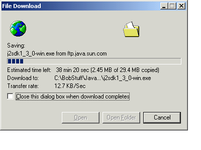Once the download is completed, you need to go to the directory (folder) into which it put the file just downloaded. The filename is "j2sdk1_3_0-win.exe". Double click on this file to start unpacking and installing the software.
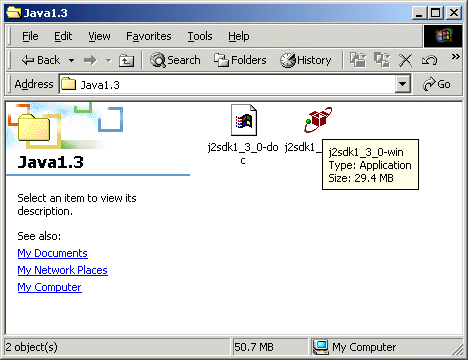The first screen is the "Welcome" screen. Click the "Next" button.
Then there is a Copyright notice and then the "Choose Destination" screen. If possible, you should not change the destination. There is nothing wrong if you do change the destination. You will simply have to remember the destination into which you installed the Java software. The default destination is "C:\jdk1.3".
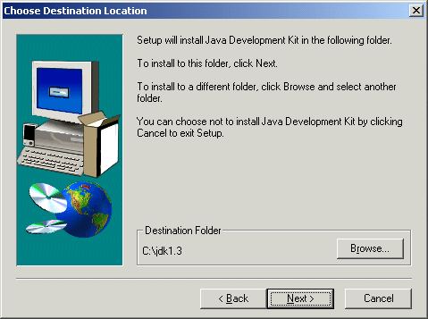Next choose the components to install. I usually don't install the "Demos" nor the "Java Sources".
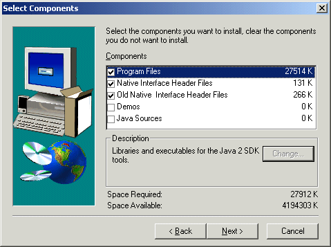Clicking the "Next" button should start the installation. When it is completed you will see the following screen.
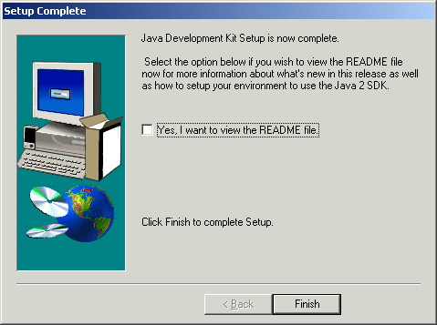You can read the "README" file if you want to.
Java is now installed on your system. There are a few additional steps to make the "Java Plugin" work with your web browser. We'll do that after we install the Java 3D software.
So, next go to the Sun web site for Java 3D.
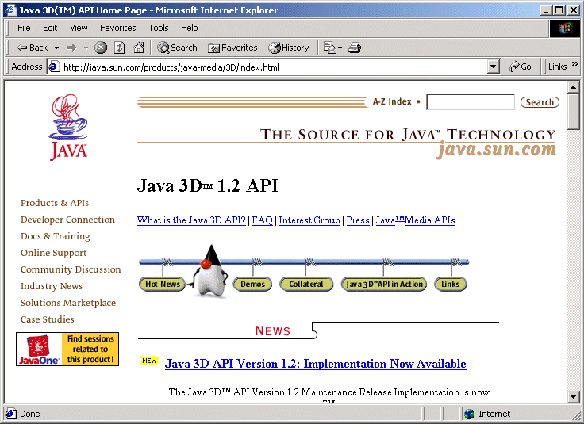There are several web pages you have to go through to download the Java 3D package.
Click on whichever version is "Now Available."
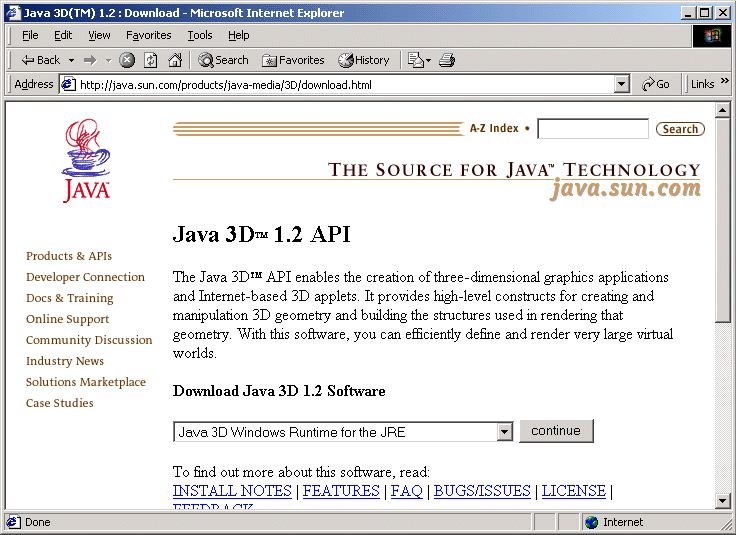Select the operating system you use. I clicked on the "Java 3D Windows RunTime and Examples for the JDK"
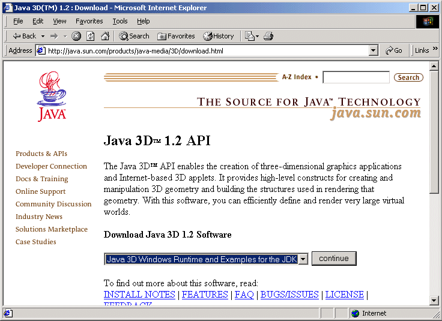Click the "continue" button to (finally) get to the download page.
Click the "FTP Download" button. This will start to download the Java 3D package.
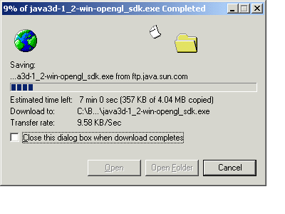Note where it downloaded the package to. Go to that directory (folder) and you should see a file called "java3d-1_2-win-opengl_sdk.exe".
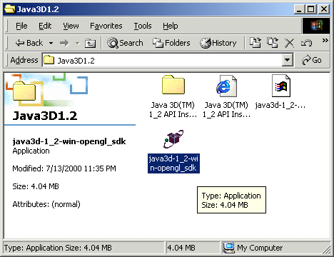Double click on this file to start the unpacking and installation of Java 3D.
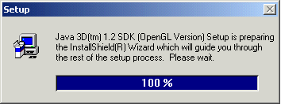You will get another "Welcome" screen.
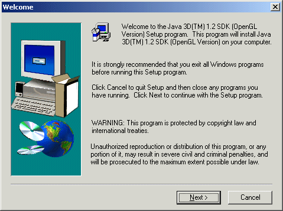And another "Copyright" screen.
Then, after clicking on the "Next" button, you will get to the "Destination" screen.
Be careful here. Note that the default destination is "c:\jdk1.2.2". But, if you took the default destination when installing the Java software above (first install above), then the Java package was installed into "c:\jdk1.3". So you need to change this "Destination Folder" to be "c:\jdk1.3" (or whatever destination you specified when installing Java above).
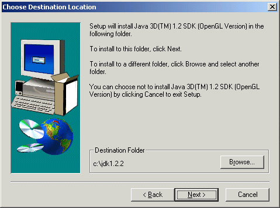Click the "Browse..." button.
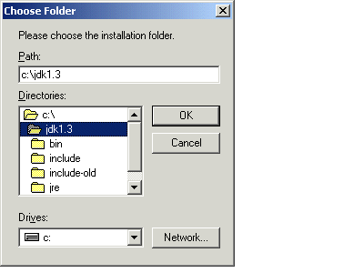This lets you specify the destination location. Type in "c:\jdk1.3".
Click "OK" and you should be back at the "Choose Destination Location" screen with "c:\jdk1.3" specified as the destination.
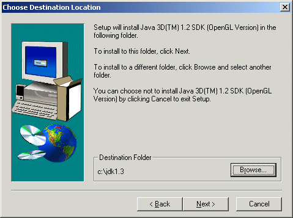Click the "Next" button.
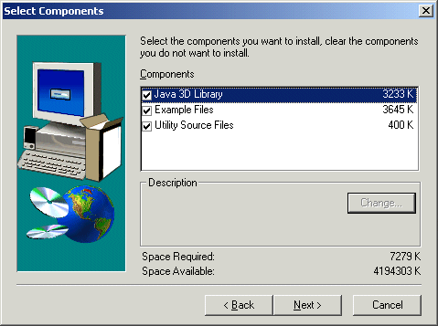You don't need the "Example Files" nor the "Utility Source Files", so you can uncheck these if you want. Keeping them checked only means that they will take up a little space on your disk.
Click "Next" and the installation should proceed. When its done you should see this next screen.
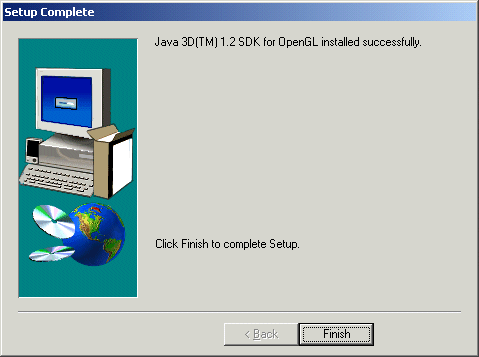Click "Finish".
Well, the software is now installed.
But you have to tie it all together and let your web Browser know where to find everything.
So, next go to your Windows "Control Panel".
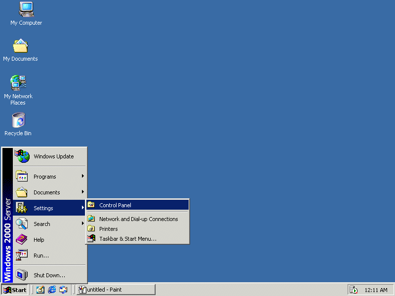 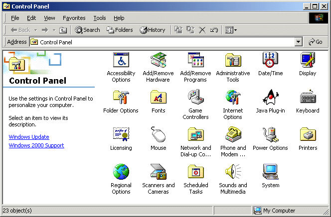You should see an icon for "Java Plug-in". Double click on the icon to start the "Java Plug-in Control Panel".
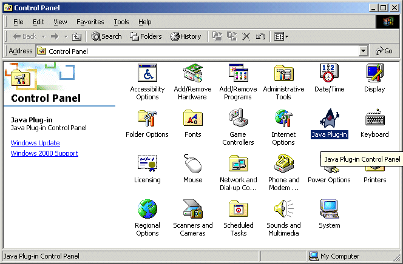 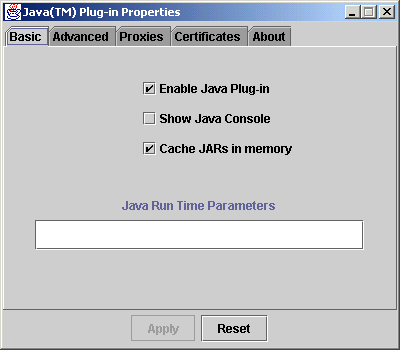Click on the "Advanced" tab.
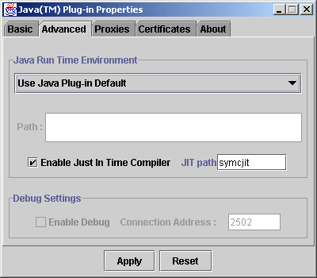Click on the "Use Java Plug-in Default". This will list various Java directories.
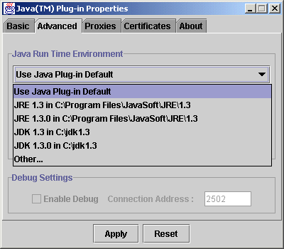Click on "JDK 1.3 in C:\jdk1.3".
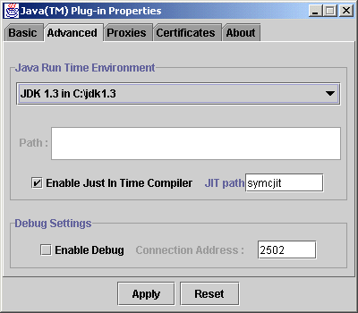Then click on the "Apply" button.
You now have Java and Java 3D installed.
To see if its all installed correctly and to make sure you can run Java 3D applets from the web, you can go to my web Java 3D page and click on the underlined "Click here".
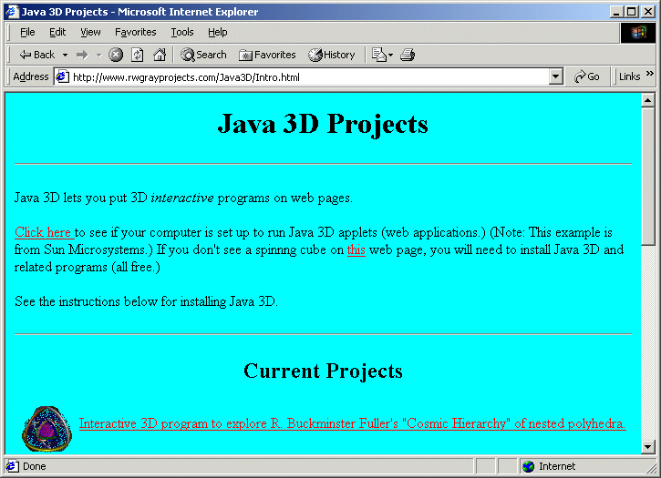This should start Sun's "spinning cube" example.
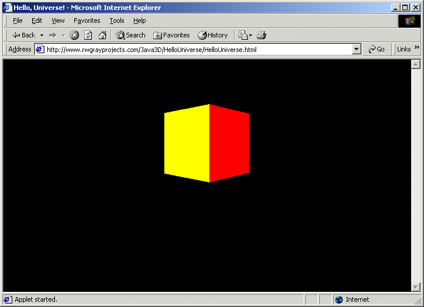If the spinning cube is not displayed then there is something wrong with the installation.
Go to the "c:\jdk1.3\jre\lib\ext" directory on your PC and make sure that there are 4 files there. They should be called "j3daudio.jar", j3dcore.jar", j3dutils.jar", and vecmath.jar.
If these files are not in this directory then you need to find them and copy them into this directory. You can use the "Find" option under the Windows "Start" button to find these files.
If this doesn't fix the problem then you will have to ask someone else. There is a Java 3D discussion group on the web which might be able to help you.
Good luck.